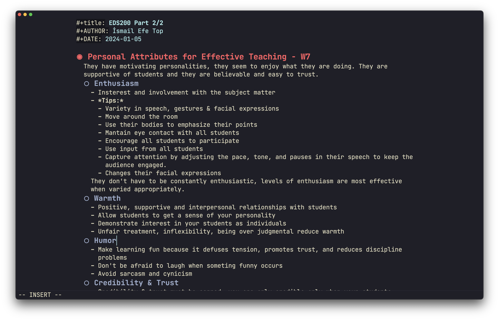

2024-01-14
First of all, this post is directly inspired by Álvaro's work. I love his stuff and he has been a great inspiration for me. I suggest everyone to check out his stuff.
In this post I am planning to walk you through my visual Emacs setup, I will use the Doom Framework. I am planning on making a detail blog post about Emacs, org-mode and how I use them, because of this I will not go into explanation of what Emacs is. There are great sources about Emacs and org-mode on youtube. Until I make that post, you can explore the Emacs world freely.
Let's Start
I will be using Homebrew to install Emacs and it's dependencies.
/bin/bash -c "$(curl -fsSL https://raw.githubusercontent.com/Homebrew/install/HEAD/install.sh)"I choosing the default cask Emacs. I tried several different forks of mac Emacs but all of them gave me poor performance on my m2 macbook.
brew install --cask emacsAfter installing do not start Emacs. Starting Emacs will create a profile, which will conflict with your doom profile.
Doom is a stable framework for Emacs. You can considered like a base config file. It really makes Emacs usable out-of-box.
git clone --depth 1 https://github.com/doomemacs/doomemacs ~/.config/emacs
~/.config/emacs/bin/doom installAnd now we are ready to hack our Emacs.
I used to use the doom-dracula theme. But nowadays my favorite is the kanagawa theme.
Add the below line to ~/.config/doom/package.el
(package! kanagawa-theme)Then set your theme to kanagawa
(setq doom-theme 'kanagawa)I like using the JetBrains Mono.
(setq doom-font (font-spec :family "JetBrains Mono" :size 22))This puts a word count in the modeline.
(setq doom-modeline-enable-word-count t)'hl-line' makes the current line a different color. I don't like it.
(remove-hook 'doom-first-buffer-hook #'global-hl-line-mode)I like the look of an empty unified title-bar, so this removes the text. Only works for mac.
(setq ns-use-proxy-icon nil)
(setq frame-title-format nil)There is an ugly tilde sign on empty lines by default. I really don't like it. You can remove it by commenting out the 'vi-tilde-fringe' line in ~/.config/doom/init.el
There is a melpa package called olivetti. This package provides a good look for writing/reading by decreasing the width of the buffer.
You can install Olivetti by adding the below line to ~/.config/doom/package.el
(package! olivetti)You can adjust the width like this
(setq olivetti-body-width 94)When writing or reading I like a couple of things different. I like to open up olivetti, disable the line numbers and the modeline. This function allows me to change these settings in one go. Also I have an undo function. I have them set to 'ö' and 'ç' as those keys are not used for any commands.
Reading Function:
(defun efe/reading-mode ()
"Toggle reading mode."
(interactive)
(hide-mode-line-mode +1)
(olivetti-mode)
(menu-bar--display-line-numbers-mode-none))
(global-set-key (kbd "C-ö") 'efe/reading-mode)Undo Function:
(defun efe/undo-reading-mode ()
"undo reading mode."
(interactive)
(hide-mode-line-mode -1)
(setq olivetti-mode nil)
(menu-bar--display-line-numbers-mode-absolute))
(global-set-key (kbd "C-ç") 'efe/undo-reading-mode)Lastly, I like to use this Icon. It is quite old but it suits my style.
{kind=link}